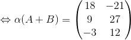

Înmulțirea unei matrice cu un scalar
Produsul dintre o matrice și un scalar
Definiția M13: Produsul dintre o matrice și un scalar
Fie matricea și scalarul
Se numește produsul dintre scalarul  și matricea
și matricea  , matricea notată , definită prin
, matricea notată , definită prin
Observație:
A înmulți o matrice cu un scalar înseamnă a înmulți toate elementele matricei cu acel scalar.
Exemplu:
Fie matricea și scalarul Calculăm
Rezolvare:
Observație:
Din proprietățiile înmulțirii numerelor complexe rezultă proprietățiile înmulțirii unei matrice cu un scalar.
Proprietățile înmulțirii unei matrice cu un scalar
Propoziția M14: Proprietățile înmulțirii unei matrice cu un scalar
Exemplul 1: (Arătăm că are loc proprietatea 1.)
Fie matricele și scalarul
Atunci:


![\begin{align*} \alpha A+\alpha B&=3 \cdot\begin{pmatrix} 1 & 2\\ -1& 3\\ 1&4 \end{pmatrix}+3\cdot\begin{pmatrix} 5 &-9 \\ 4& 6\\ -2 &0 \end{pmatrix}\\\\ &= \begin{pmatrix} 3 \cdot1 & 3 \cdot2\\ 3 \cdot(-1)&3 \cdot 3\\ 3 \cdot1&3 \cdot4 \end{pmatrix}+\begin{pmatrix}3 \cdot 5 &3 \cdot(-9) \\3 \cdot 4&3 \cdot 6\\ 3 \cdot(-2 )&3 \cdot0 \end{pmatrix}\\\\ &=\begin{pmatrix} 3 & 6\\ -3 &9\\ 3 &12\end{pmatrix}+\begin{pmatrix}15 &-27 \\12&18\\ -6&0 \end{pmatrix}\\\\ &=\begin{pmatrix} 3+15 & 6+(-27)\\ (-3)+12 &9+18\\ 3+(-6) &12+0\end{pmatrix}\\\\ &=\begin{pmatrix}18 & -21\\ 9 &27\\-3 &12\end{pmatrix} \end{align*}](../../media/webbooks/283/14144/images/equations/7oaqovosqm_alx7fv-8hig==.gif)
Exemplul 2: (Arătăm că are loc proprietatea 2.)
Fie matricea și scalarii și
Atunci:

![\begin{align*} \alpha A+\beta A&= 2 \cdot\begin{pmatrix} -2 &4 &-5 \\ 7& 1 &1 \end{pmatrix}+(-3) \cdot\begin{pmatrix} -2 &4 &-5 \\ 7& 1 &1 \end{pmatrix}\\\\ &=\begin{pmatrix} 2 \cdot(-2) &2 \cdot4 &2 \cdot(-5) \\ 2 \cdot7& 2 \cdot1 &2 \cdot1 \end{pmatrix}+\begin{pmatrix} (-3) \cdot(-2) &(-3) \cdot4 &(-3) \cdot(-5) \\ (-3) \cdot7&(-3) \cdot 1 &(-3) \cdot1 \end{pmatrix}\\\\ &=\begin{pmatrix} -4 &8 &-10 \\ 14&2 &2 \end{pmatrix}+\begin{pmatrix} 6 &-12 &15 \\ -21& -3 &-3 \end{pmatrix}\\\\ &=\begin{pmatrix} (-4)+6 &8+(-12) &(-10)+15 \\ 14+(-21)&2+(-3) &2+(-3) \end{pmatrix}\\\\ &=\begin{pmatrix} 2 & -4 &5 \\ -7& -1 &-1 \end{pmatrix} \end{align*}](../../media/webbooks/283/14144/images/equations/hl9uqemstjzvytn6-lkpkg==.gif)
Exemplul 3: (Arătăm că are loc proprietatea 3.)
Fie matricea și scalarii  și
și
Atunci:
![\begin{align*} \alpha (\beta A)&=(-2)\cdot\begin{bmatrix} 4\cdot\begin{pmatrix} 1 &2 &3 \\ 2 & 1 &-1 \\ 1& -5 &3 \\ 4& -4 &1 \end{pmatrix}\end{bmatrix}\\\\ &=(-2)\cdot \begin{pmatrix} 4\cdot1 &4\cdot2 &4\cdot3 \\ 4\cdot2 & 4\cdot1 &4\cdot(-1) \\ 4\cdot1& 4\cdot(-5) &4\cdot3 \\4\cdot 4& 4\cdot(-4) &4\cdot1 \end{pmatrix}\\\\ &=(-2)\cdot \begin{pmatrix} 4 &8 &12 \\ 8 & 4&-4 \\ 4& -20 &12 \\16& -16&4\end{pmatrix}\\\\ &= \begin{pmatrix} (-2)\cdot 4 &(-2)\cdot 8 &(-2)\cdot 12 \\ (-2)\cdot 8 & (-2)\cdot 4&(-2)\cdot (-4) \\ (-2)\cdot 4&(-2)\cdot (-20) &(-2)\cdot 12 \\(-2)\cdot 16&(-2)\cdot ( -16)&(-2)\cdot 4\end{pmatrix}\\\\ &=\begin{pmatrix} -8&-16 &-24 \\ -16 & -8&8 \\ -8&40 &-24 \\-32&32&-8\end{pmatrix} \end{align*}](../../media/webbooks/283/14144/images/equations/2rdkxxtcqtfqs7hokgpjrg==.gif)
![\begin{align*} (\alpha \beta )A &=\big((-2)\cdot4\big)\cdot\begin{pmatrix} 1 &2 &3 \\ 2& 1 &-1 \\ 1&-5 &3 \\ 4& -4 &1 \end{pmatrix}\\\\ &=(-8)\cdot\begin{pmatrix} 1 &2 &3 \\ 2& 1 &-1 \\ 1&-5 &3 \\ 4& -4 &1 \end{pmatrix}\\\\ &=\begin{pmatrix} (-8)\cdot1 &(-8)\cdot2 &(-8)\cdot3 \\ (-8)\cdot2& (-8)\cdot1 &(-8)\cdot(-1) \\ (-8)\cdot1&(-8)\cdot(-5) &(-8)\cdot3 \\ (-8)\cdot4& (-8)\cdot(-4) &(-8)\cdot1 \end{pmatrix} \\\\&=\begin{pmatrix} -8&-16 &-24 \\ -16 & -8&8 \\ -8&40 &-24 \\-32&32&-8\end{pmatrix} \end{align*}](../../media/webbooks/283/14144/images/equations/l7lx7e88riwrxm0bbvxdfq==.gif)
Exemplul 4: (Arătăm că are loc proprietatea 4.)
Fie matricea
Atunci: